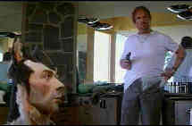

| 2
Days in the Valley/B+,B+ |
|
HBO/1996/105/WS
2.35 |
There's
a beat to 2 Days in the Valley. It never stops. It's like a good pop song. It catches you,
gets you tapping out the rhythm on the floor of the car while creeping along in expressway traffic.
Writer-Director John Herzfeld uses his players and script elements like members of an orchestra.
The fine cast works very well together in this highly entertaining ensemble film. Here's a dark
comedy that keeps a good balance between taste and excess blood.
Ice cold hitman Lee Woods (James Spader in one of his best roles) is hired
to off a philandering boy friend. He in turn hires a former killer Dosmo Pizzo (Danny Aiello who
works in a pizza parlor to assist. The crime is executed with terrific touches of humor, played
right down the middle off-center and then Spader proceeds to set Aiello up as the fall guy.
Another beat finds art gallery owner Allan Hopper losing it to kidney stones while driving his BMW
in top down San Fernando valley. Cut to Teddy Peppers (Paul Mazursky), a down and out movie
director looking at the last shoot. Hopper's sister runs into Pepper at a cemetery, Pizzo falls
into Hopper's backyard after escaping Woods, and Jeff Daniels and Eric Stolz are cops investigating
the murder after running into a terrified Terry Hatcher fleeing the crime.
 |
|
Danny Aiello as a hitman.©.Rysher
|
Add a touch of Charlize Theron as Woods' accomplice, a generous helping of Glenn Headley as
Hopper's assistant, send them all on a collision course, and 2 Days in the Valley comes to
delightful life.
This is a very sharp DVD, perhaps a dram too sharp as straight lines and
edges tend to jump and break up slightly. The night scenes are beautifully lit in the transfer and
colors is rich and eye-popping. Transfer elements are in perfect condition. The 2.35 widescreen DVD
incorrectly indicates that it is enhanced for 16 x 9. It is most definitely not anamorphic. Too
bad. The Dolby 5:1 mix is very directional and adds impact to the presentation.
|
|

The Exquisite Muse of Zhang Yimou

The powerful image-making of Zhang Yimou has revealed itself in
virtually every film he has made. Coupled with his remarkable collaboration with actress Gong Li,
Zhang's has built a stunning body of work Click the image to read all about it.

 Direct from the corridors of the Home Theater Forum, Home Theater Talk is the
newest place on the Net to discuss everything home theater. Friendly atmosphere and knowledgeable
folks are the secret ingredients. Direct from the corridors of the Home Theater Forum, Home Theater Talk is the
newest place on the Net to discuss everything home theater. Friendly atmosphere and knowledgeable
folks are the secret ingredients.

ReelUniverse.com is the home of the
true Indies. You will find links to many independent filmmakers selling VHS copies of their films
that have not yet gotten commercial release. None of the filmmakers represented on the site have
DVD product available, but here's hoping.
 Sight and Sound Magazine is
the venerable voice of The British Film Institute. The site includes articles and film reviews. A
great resource in print and on the Internet. Sight and Sound Magazine is
the venerable voice of The British Film Institute. The site includes articles and film reviews. A
great resource in print and on the Internet.
 Lovers of Hong
Kong movies will relish MC4's site that
includes reviews and other information about the Hong Kong movie scene. Lovers of Hong
Kong movies will relish MC4's site that
includes reviews and other information about the Hong Kong movie scene.

The
Movie Poster Archive include extensive poster images from the films of stars like Susan Hayward,
Kirk Douglas, Katharine Hepburn and many more. This month's featured star is Robert Mitchum |